December 14, 2011 Version Update
Event-related
- [dev1039] Voidwatch: Third Chapter
- The third chapter of the Voidwatch battle system has been introduced.
- 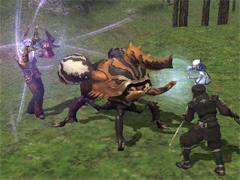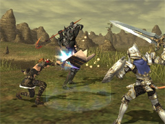
- VNMs now possess an extra weakness.
- These weaknesses may only be triggered once per battle, and exploiting them will increase all spectral alignment values to their maximum level.
- Synchronic Blitz now yields additional bonuses.
- Players will now receive spectral alignment bonuses based on the number of times their weapon skills, abilities, or magic attacks strike an enemy during a synchronic blitz.
- New varieties of atmacite and abyssite have been added.
- A new key item, the periapt of clarity, has been added.
- Bearers of this periapt and the periapt of percipience are granted insight into the magic type (white magic, black magic, blue magic, bard songs, ninjutsu) and element of their Voidwalker foe's weakness.
- When infusing atmacite, players will be given the option to replace the selected atmacite after confirming its effects.
- The glossary of game terms on the official homepage has been updated with the latest Voidwatch terminology.
- [dev1038] New Walk of Echoes Battlefields
- Walks twelve through fifteen of the Walk of Echoes have been unlocked.
- 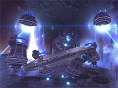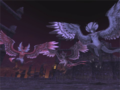
- [dev1044] New Magian Trials
- New weapon upgrade trials have been introduced to the current trial list.
- Relic and Relic +1 Armor will be upgradable via Trial of the Magians.
- Two upgrade stages are available, each offering the following augmented attributes:
- Stage 1: Item-related augments
- Stage 2: Merit point-related augments
- *Players will still be able to undertake these trials even if no information for them is displayed.
- Upgraded armor pieces will have a higher level requirement than their base forms.
- Armor pieces upgraded to Stage 2 will be storable with the Porter Moogle service.
- *Relic and Relic +1 Armor will result in the same items after upgrading. Owners of Relic +1 Armor will be rewarded with less demanding conditions for the first upgrade stage.
- [dev1036] Gobbie Mystery Box
- Players will be able to accrue Daily Tally points that may be exchanged for random awards via the Goblins below.
- 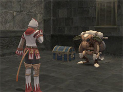
- Once you have spoken to one of the Goblins above, points will be added to your Daily Tally every Earth day at 12:00am (JST).
- You will be able to select from five different point amounts that you would like to expend at once, and the reward will vary depending on the amount selected.
- Your Daily Tally can be increased by trading unneeded rare items to the Goblins.
- *There will be a cap on the amount of points you can earn in a single Earth day from trading items.
- [dev1061] Grounds of Valor Adjustments
- The following areas have been added:
-
- *Treasure caskets will also appear in the following areas.
- 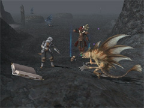
- [dev1050] Adventuring Fellows: Level 95 Unlocked
- The level cap for adventuring fellows has been raised from 90 to 95. Completion of a fellow limit break quest is required to unlock level 91 and higher.
- [dev1034] The amount of experience and Allied Notes earned from successful Campaign operations has been increased.
- [dev1043] The waiting period between chocobo race entries has been lowered from 24 hours to 20 hours.
- [dev1031] It is now possible to warp from an outpost to your nation of allegiance using either gil or conquest points.
- The NPC Domenic in Lower Jeuno (J-7) can now teleport players to the following battlefields for a set price:
-
- *Completion of the quest "Beyond Infinity" is mandatory in order to be transported.
Battle-related
- [dev1042] Level Cap Increase
- The maximum job level for player characters has been increased to 99. Players must complete the quest "Beyond Infinity" offered by the Nomad Moogle NPC in Ru'Lude Gardens to unlock levels 96 and above.
- 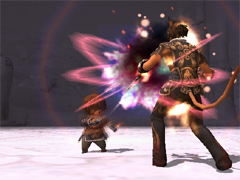
- [dev1040] Merit Point Adjustments
- The maximum number of storable merit points has been increased from 20 to 30.
- The maximum number of upgrades has been increased for the following categories:
- HP/MP: Increased from 12 to 15
- Attributes: Increased from 8 to 12
- The following new job abilities have been added:
-
-
- Grants the effect of HP Drain or MP Drain to party members within area of effect.
- Lures an enemy into an eternal nightmare.
- *If the enemy is not lured into an eternal nightmare, will give an effect of Dispel instead.
- 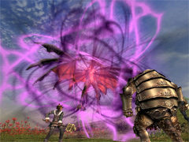
-
- Increases chance of countering for party members within area of effect. Lucky Number: 4. Unlucky Number: 8.
- The following magic spells have been introduced:
-
-
- Restores HP for party members within area of effect. Afflatus Misery: Increases healing potency.
- Enhances Intelligence for party members within area of effect.
- Enhances Dexterity for party members within area of effect.
- Enhances Intelligence.
- Enhances Dexterity.
- Gradually restores target's HP.
- 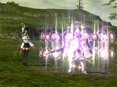
-
- Deals thunder damage to enemies within area of effect. Successive use enhances spell potency.
- 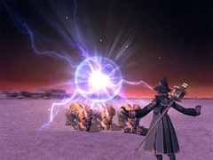
- Weighs an enemy down and lowers its movement speed.
-
- Increases resistance against lightning and sometimes nullifies lightning damage for party members within area of effect.
- 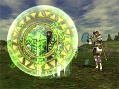
- Increases resistance against light and sometimes nullifies light damage for party members within area of effect.
- Increases resistance against darkness and sometimes nullifies darkness damage for party members within area of effect.
- The following spells have been made available to new jobs:
-
- The following spells are now learnable by blue mages:
-
- Delivers a fourfold attack. Chance of critical hit varies with TP.
- Deals water breath damage to enemies within a fan-shaped area originating from the caster. Additional effect: Poison.
- Deals thunder breath damage to enemies within a fan-shaped area originating from the caster.
- Increases the caster's chance of countering.
- Delivers a fivefold attack. Damage varies with TP.
- Deals wind breath damage to enemies within a fan-shaped area originating from the caster.
- Damage varies with TP. Additional effect: Accuracy Down.
-
- Freezes target in fear.
- Deals fire damage to enemies within area of effect. Additional effect: Burn.
- 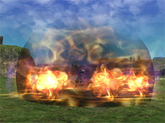
- Delivers an area attack. Additional effect duration varies with TP. Additional effect: Weakens defense.
- Resists physical damage.
- Delivers an area attack. Additional effect duration varies with TP. Additional effect: Lowers attack, defense, and accuracy.
- Delivers a threefold attack. Damage varies with TP. Additional effect: HP Drain.
- Four new familiars available with the Beastmaster's Call Beast ability have been added.
- 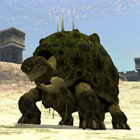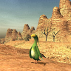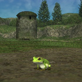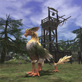
- The familiar Presto Julio will now attack faster.
- The following job adjustments have been implemented:
-
- The maximum weapon skill power bonus granted by the ability Restraint has been reduced.
- Melee weapon skills will now have a chance of enhancing Treasure Hunter effectiveness.
- Weapon skills used alone will grant the enhancement at the same rate as standard melee attacks.
- Weapon skills combined with Sneak Attack or Trick Attack will grant the enhancement at the same rate as melee attacks made with these abilities active.
- For multi-part weapon skills, the bonus calculation will only be performed for the first hit.
- *Weapon skill Treasure Hunter bonuses will not be accompanied by visual effects or log window messages.
-
- Maximum effect values for the following attachments will now increase in proportion to the number of active maneuvers:
- Strobe / Inhibitor / Steam Jacket / Auto-Repair Kit II
- The required capacity of the following attachments has been reduced from 2 to 1:
- Reactive Shield / Scope / Schurzen / Volt Gun
- The properties of the following attachments have been revised:
| Attachment Name
|
Revised Properties
|
| Reactive Shield
|
Counterattack damage will now receive a bonus in proportion to frame skill level.
|
| Mana Booster
|
Will now shorten casting time instead of increasing spell use frequency.
|
| Drum Magazine
|
Accuracy penalty has been eased slightly, and attack speed raised.
|
| Replicator
|
Blink shadow quantity will now increase in proportion to the number of active Wind Maneuvers.
|
| Shock Absorber
|
Damage absorbed will now receive a bonus based on frame skill and active Ice Maneuvers.
|
Armor Plate
Armor Plate II
|
Will now reduce physical damage taken rather than enhancing defense.
|
| Hammermill
|
Shield Bash will now always hit while Hammermill is equipped.
|
| Volt Gun
|
Will no longer depend on enemy level, and a damage bonus will be granted based on frame skill level and active Thunder Maneuvers.
|
| Heatsink
|
Overload rate reduction will now apply to all maneuvers, not only Fire Maneuvers.
|
| Damage Gauge
|
Recast time for curing magic will be shortened.
|
| Eraser
|
Will cure multiple status ailments and erase only Light Maneuvers.
|
|
- 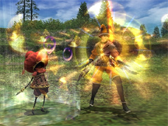
- Automaton behavior patterns have been refined.
- With one active light maneuver, automatons will now prioritize HP recovery over curing status ailments.
- Automatons will also prioritize HP recovery when HP level is extremely low.
- Magic spells have been added/adjusted as follows:
- Separate recast timers have been established for each category of magic, such as enhancing or enfeebling spells.
- *Cure-type spells, Regen-type spells, and status ailment removal spells will each have their own recast timer.
- Automatons may now learn the following spells:
- Protect (I-V) / Shell (I-V) / Stoneskin / Haste / Phalanx / Erase / Absorb-Attri / Dispel / Dread Spikes / Addle / Regen IV
- *Phalanx and Stoneskin will only be cast upon the master.
- *Protect, Shell, and Haste will only be cast upon the master and party members.
- Level IV elemental spells have been unlocked for the Stormwaker Y-700.
- Automatons will now occasionally cast Cure V instead of Cure VI depending on the target's current HP.
- A minimum damage value has been established for Magic Mortar.
- Sharpshot Z-500 adjustments:
- Distance modifications for ranged attacks have been abolished.
- The job ability "Maintenance" （Lv. 30 / Recast time: 90 seconds） has been added:
- This ability will require Automaton Oil, and will be effective on all status ailments curable by Erase and Na-type spells.
- Up to four status ailments may be removed depending on the type of Automaton Oil used.
- *To accompany this change, the new item Automaton Oil +3 (Lv. 80) has been added.
- Light Arts will now grant a bonus to the effect and duration of Regen spells.
- Dark Arts will now grant a bonus to the effect and duration of Helix spells.
- Tabula Rasa will now grant a bonus to the effect and duration of Regen and Helix spells.
- Tabula Rasa will now negate recast times for Light and Dark Arts.
- The recast time for Modus Veritas has been shortened.
- The effect duration of Klimaform has been lengthened.
- The learnable level for Regen III has been lowered from 83 to 59.
- The learnable levels for Helix spells have been lowered.
- The effect duration of Helix spells will now be based on the caster's level.
| Level
|
Duration
|
| 20 — 39
|
30 seconds
|
| 40 — 59
|
60 seconds
|
| 60 and up
|
90 seconds
|
|
- The maximum recast time reduction bonus has been increased.
- Casting time has been reduced for the following spells:
- Regen / Regen II / Regen III / Regen IV
- The following weapon skills have been added:
-
- Maximum total value: 15
- Upgrade levels: 5
- Merit points needed for each upgrade: 10/15/20/25/30
- *To undertake this quest, the player's main job must be level 96 or higher.
- Each individual weapon skill may be learned by upgrading it at least one level.
- Additional merit points allocated to a particular skill will incrementally enhance its power.
- The following conditions must be met to use a skill after learning it:
- The PC's main job must be eligible for the skill in question (see chart below).
- Job level must be 96 or higher.
- The corresponding weapon skill attribute must be 357 or higher.
- The name of the Den of Rancor monster Stygian Pugil has been corrected to Demonic Pugil.
Item-related
- New items have been introduced.
- New synthesis recipes have been introduced.
- New synergy recipes have been introduced.
<Rank: Recruit>
<Rank: Craftsman>
<Rank: Artisan>
| Item
|
Required Crafting Skill
|
Ingredients
|
| Adaman Bolt
|
Woodworking
Smithing
|
Holly Lumber, Adaman Bolt Heads
|
| Avant Gauntlets
|
Smithing
Goldsmithing
|
Mythril Sheet, Durium Sheet x 2, Mythril Gauntlets
|
| Avant Leggings
|
Smithing
Goldsmithing
|
Mythril Sheet, Durium Sheet x 2, Mythril Leggings
|
| Avant Helm
|
Smithing
Leathercraft
|
Mythril Ingot, Mythril Sheet, Durium Sheet, Black Tiger Leather
|
| Avant Cuisses
|
Smithing
Leathercraft
|
Mythril Sheet, Durium Sheet x 2, Black Tiger Leather x 2
|
| Sweven Coat
|
Clothcraft
Leathercraft
|
Sparkstrand, Wool Cloth x 2, Twill Damask x 3, Black Tiger Leather
|
| Sweven Mitts
|
Clothcraft
Leathercraft
|
Sparkstrand, Wool Cloth, Water Spider's Web, Black Tiger Leather
|
| Sweven Slacks
|
Clothcraft
Leathercraft
|
Sparkstrand, Wool Cloth x 2, Twill Damask, Black Tiger Leather
|
| Sweven Boots
|
Clothcraft
Leathercraft
|
Sparkstrand x 2, Wool Cloth x 2, Black Tiger Leather
|
| Sweven Corona
|
Clothcraft
Alchemy
|
Sparkstrand x 2, Coeurl Whisker, Seer's Crown
|
| Kacura Cap
|
Leathercraft
Bonecraft
|
Marid Leather, Flocon-de-mer, Coral Cap
|
| Kacura Mittens
|
Leathercraft
Bonecraft
|
Marid Leather, Wyvern Scales, Flocon-de-mer
|
| Kacura Subligar
|
Leathercraft
Bonecraft
|
Marid Leather, Flocon-de-mer, Coral Subligar
|
| Kacura Leggings
|
Leathercraft
Bonecraft
|
Marid Leather x 2, Wyvern Scales, Flocon-de-mer
|
| Adaman Bullet
|
Alchemy
Smithing
|
Adaman Ingot, Firesand
|
| Orichalcum Bullet
|
Alchemy
Goldsmithing
|
Orichalcum Ingot, Firesand
|
| Lucky Broth
|
Cooking
|
Gelatin, Buffalo Meat, Abaia
|
|
<Rank: Adept>
| Item
|
Required Crafting Skill
|
Ingredients
|
| Avant Mail
|
Smithing
Leathercraft
|
Mythril Sheet x 2, Durium Sheet x 2, Black Tiger Leather, Ruszor Leather
|
| Asura Samue
|
Clothcraft
Smithing
|
Darksteel Sheet x 2, Sparkstrand, Velvet, Rainbow Cloth, Twill Damask
|
| Artful Belt
|
Leathercraft
Smithing
|
Durium Chain, Ruszor Leather
|
| Kacura Harness
|
Leathercraft
Bonecraft
|
Marid Leather x 2, Wyvern Scales x 2, Flocon-de-mer
|
| Shadowy Broth
|
Cooking
|
Dragon Meat, Nopales, Agaricus
|
|
- The skills required for the synergy recipe for Fusion Bolts has been revised as follows:
- Succeeding in high-quality synthesis of the Automaton Oil item will now yield Automaton Oil +3.
- The following new quivers and pouches have been introduced:
- Gargouille Quiver / Adaman Bolt Quiver / Orichalcum Bullet Pouch / Adaman Bullet Pouch
- [dev1060] Porter Moogle Service Expansion
- The following items are now storable through the Porter Moogle NPC:
- Spook-a-Swirl / Chocolate Grumpkin / Harvest Horror / Spinet / Maestro's Baton
- [dev1060] Porter Moogle Service Expansion
- The following storage slips have also been added:
- [dev1028] Ex Item Delivery Revisions
- The list of undeliverable exclusive items has been updated.
- Items will no longer be lost if paralyzed while using them.
- The help text for the following items has changed.
- *The characteristics of the items themselves remain the same.
- Noesis Helm / Corselet / Corselet +1 / Mahant Sandals / Bitter Corset / Solitaire Cape / Laevateinn / Tupsimati
- NPC vendor prices for the following items have been reduced:
- Pyrohelix Schema / Hydrohelix Schema / Ionohelix Schema / Cryohelix Schema / Geohelix Schema / Anemohelix Schema / Luminohelix Schema / Noctohelix Schema
System-related
- Nation names will no longer appear when checking auction house item properties.
- [dev1037] Symbols in Macro Names
- Certain symbols (+-*=/!?<>, etc.) may now be used in macro names.
- 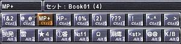
- Macro titles will now display up to eight characters in the Windows version (at resolutions of 1024 horizontal pixels or greater) and Xbox 360 HD mode.
- The location of the macro palette will be adjusted so that it no longer overlaps with the HP/MP/TP display. (Windows version only)
[Windows and Xbox 360-only updates]
- [dev1059] Log Window Expansion
- The log window will now allow for customization of window width and maximum/minimum number of lines displayed.
- These settings may be adjusted via the Main Menu under Config -< Windows.
- *Maximum line width and minimum line width can be set to values of 6-20 and 0-20, respectively. Window width can be adjusted between ten values.
[Window-only updates]
- The following settings have been added to the FINAL FANTASY XI configuration utility:
- 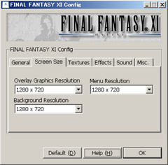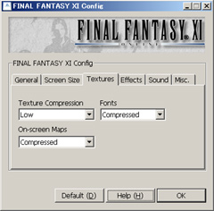
- Screen Size: Menu Resolution
- Adjust the resolution of menus.
- The main screen resolution for "FINAL FANTASY XI" is dependent on the "Overlay Graphics Resolution" setting.
- If the Overlay Graphics Resolution is set higher than the Menu Resolution, menus will be automatically resized.
- Texture Performance: Font
- Adjust font resolution.
- Compressed: Use the original high-performance compressed fonts.
- Uncompressed: Use an uncompressed version of the original fonts for slightly better readability.
- High Quality: Use new enhanced-resolution fonts.
- Sound: Always On
- Play sounds and background music even when the game window is inactive.
Resolved Issues
- The following issues have been corrected:
- An issue wherein, under certain circumstances, the offer cutscene for the quest "Howl from the Heavens" would not activate.
- An issue wherein the VNM Kaggen would use the ability "Death Prophet" immediately upon spawning.
- An issue wherein the effects of the VNM Giltine's ability "Hadal Summons" would persist even after reviving from a KO.
- An issue wherein using the ranger ability "Decoy Shot" would end Voidwatch battles under certain circumstances.
- An issue wherein defeating the VNMs Hahava, Celaeno, or Voidwrought would not bestow the appropriate title upon players.
- The issue in Walk of Echoes wherein players would prematurely be given the option to reenter a battlefield if their last battle concluded at a completion rate of less than 50%.
- An issue wherein the Zeni Notorious Monster Ob's ability "Cannibal Blade" inflicted excessive amounts of damage.
- An issue wherein the five- and three-minute warning messages were displaying at improper times in the "Empty Desires" battlefield.
- An issue wherein monsters' familiars would linger even after the battle "The Mobline Comedy" had concluded.
- An issue wherein the weapon skills Trueflight and Leaden Salute did not count toward the objectives of Marksmanship weapon skill Magian trials.
- An issue wherein the blood pact Flaming Crush did not count as a fire elemental attack for certain Magian trials.
- An issue wherein Dynamis monsters defeated while players were KO'd did not count toward the objectives of certain Magian trials.
- An issue wherein Grounds Tomes did not show up on the map radar.
- An issue in the MMM Liquidation Team wherein the monster Siltim's Floral Bouquet ability did not inflict sleep as it should.
- An issue wherein the white magic spell "Temper" did not receive a bonus based upon Enhancing Magic skill.
- An issue wherein damage healed with the spell Cura II did not count towards Afflatus Solace.
- An issue wherein the elemental affinities of the white magic spells Animus Augeo and Animus Minuo and the bard song Pining Nocturne were incorrect.
- An issue wherein the doom counter would not appear when the blue magic spell Mortal Ray was used on a player character.
- An issue wherein trading archaic mirrors to the Al Zahbi NPC Famatar did not yield the full amount of Imperial Standing credits.
- An issue wherein monsters at a certain position in The Shrine of Ru'Avitau would drop to lower floors.
- An issue wherein the weapon skill Catastrophe would not trigger its additional effect (HP Drain) when guarded.
- An issue wherein "enfeebling magic" was not listed in the help text for the Light Arts icon.
- An issue wherein Blood Pact: Wards would not affect party members if used after leaving the Walk of Echoes with an avatar already summoned.
- An issue wherein beastmaster pets and avatars would not be KO'd by Doom.
- An issue wherein the attributes of the beastmaster familiars Funguar Familiar and Discreet Louise were reversed.
- An issue wherein the charge requirement for Lucky Lulush's special ability Wild Carrot was incorrect.
- An issue wherein the minimum level required to call Lucky Lulush was incorrect.
- An issue wherein the elemental icon for Fatso Fargann's special ability Drainkiss was incorrect.
- An issue wherein Dipper Yuly's special ability Sudden Lunge did not incur enmity.
- An issue wherein using a weapon skill after the automaton attachment Heat Capacitor went into effect would result in the wrong weapon skill being selected.
- An issue wherein the automaton attachment Scanner would not prevent automatons from casting resistible enfeebling magic.
- An issue wherein the capacity of the automaton attachment Vivi-Valve would not display properly.
- An issue in the merit point menu wherein the option to lower attributes would be available for jobs other than those currently selected.
- An issue wherein the weapon graphics for the Yagrush and Nagi would still be displayed when certain races cast magic.
- An issue wherein characters would display incorrectly when the effect of Invisibility wore off while character names were disabled via the /names text command.
- An issue wherein synthesis could be performed under the Costume status.
- An issue in macro execution wherein putting <wait> on the same line as <st>, <stpc>, <stnpc>, <stpt> and/or <stal> would result in <wait> being executed during sub-target selection.
- An issue with certain Crystal War era bard NPCs wherein incorrect designations were selectable.
- An issue wherein the event replays for the quests "Project: Shantottofication" and "An Uneasy Peace" were not selectable from the Goblin Footprints in the Sacrificial Chamber.
- An issue wherein certain conditions would result in only orobons being caught when fishing on the Silver Sea routes to Nashmau and Al Zahbi.
[English-language version only]
- A number of text-related bugs reported on the forums have been addressed. Those issues not resolved in this version update will be addressed in a future patch.
Known Issues
- Trial numbers for relic armor will not display properly when viewing trial progression trees with the Magian Moogle.
*New Magian trials for Relic, Mythic, and Empyrean weapons have been delayed to allow time for proper balancing.
They are scheduled to be introduced to the test server in the near future and implemented in the release version in an additional version update.
The items required for the trials, however, have been introduced in advance in this version update.
|

{kind=link}
{kind=link}
{kind=link}
{kind=link}
{kind=link}
{kind=link}
{kind=link}
{kind=link}
{kind=link}
{kind=link}
{kind=link}
{kind=link}
{kind=link}
{kind=link}
{kind=link}
{kind=link}
{kind=link}
{kind=link}
{kind=link}
{kind=link}
{kind=link}